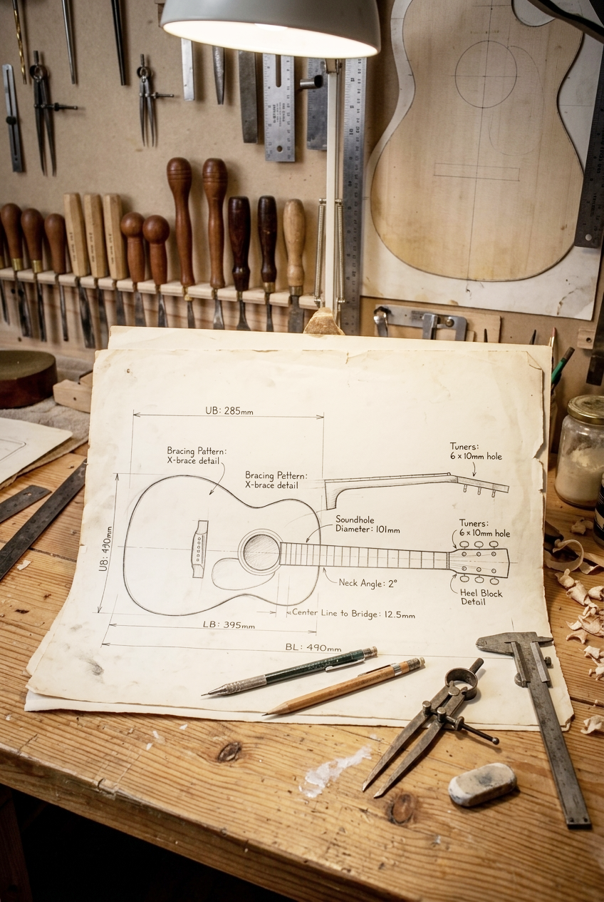
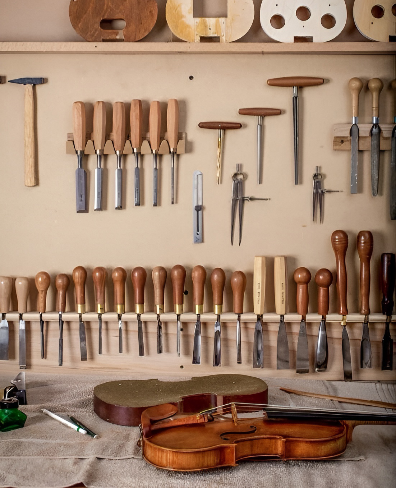
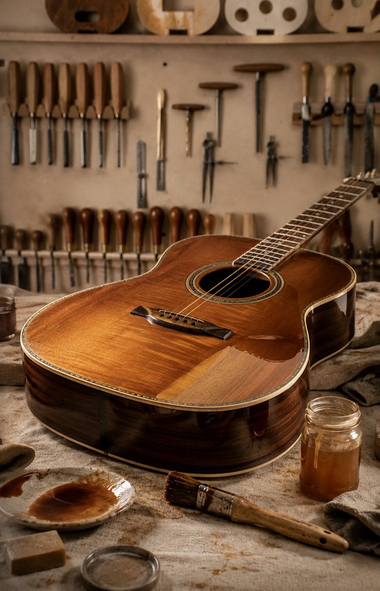
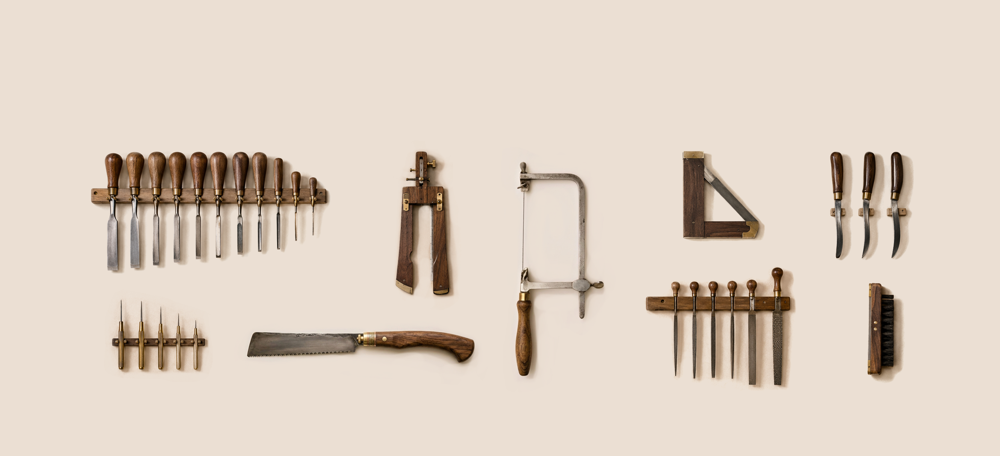
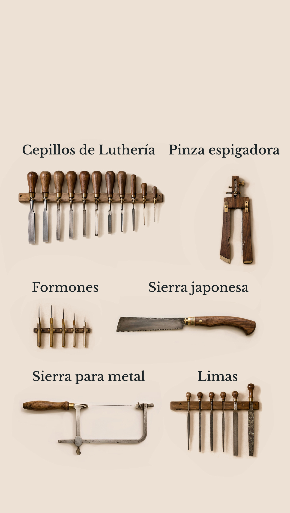
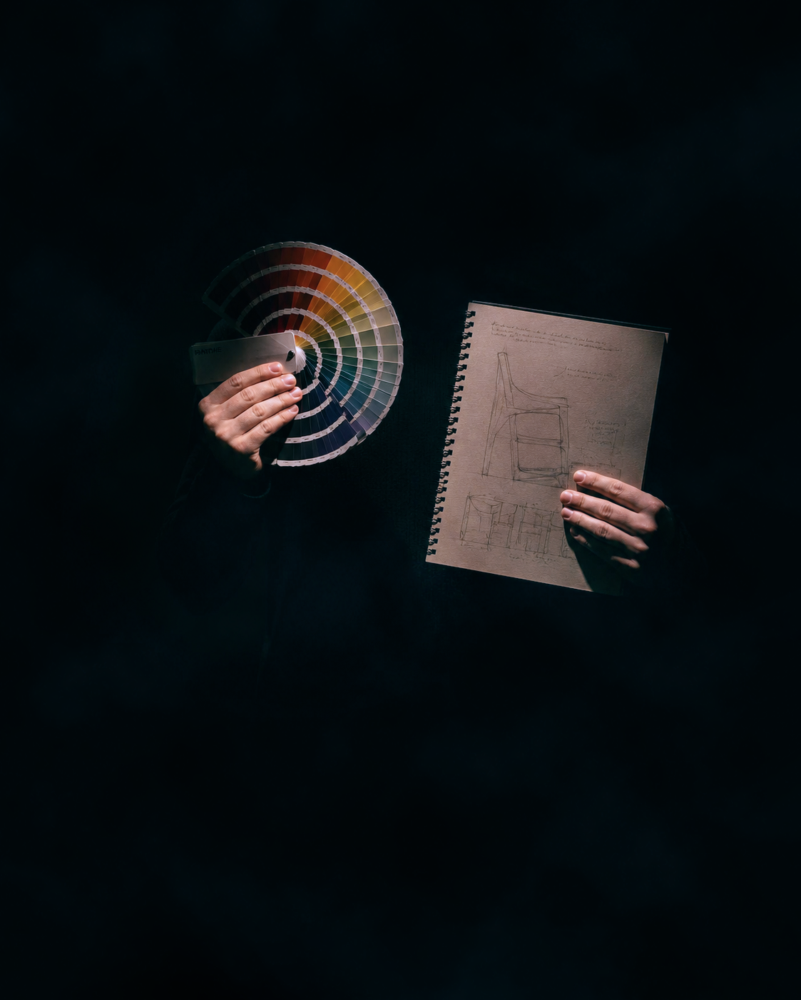
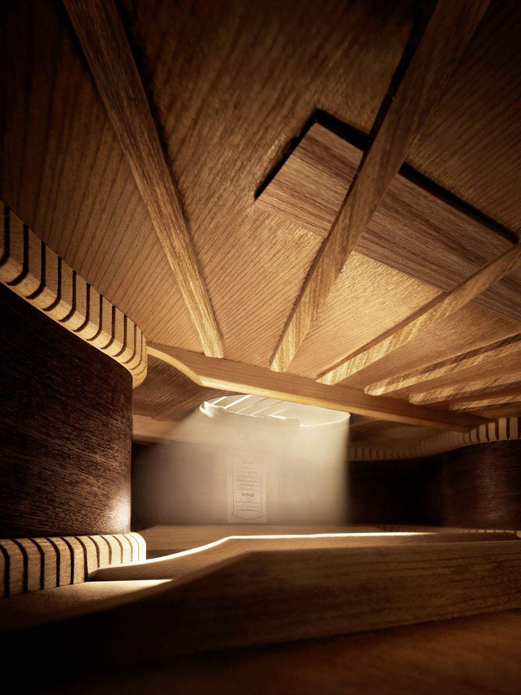
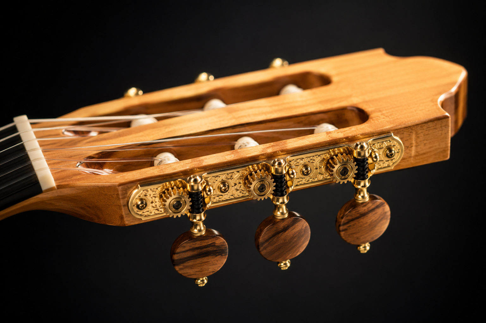
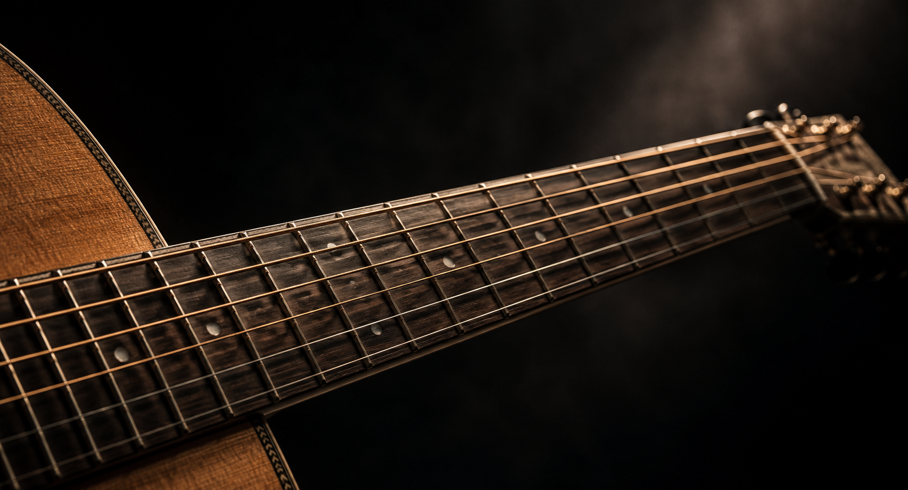
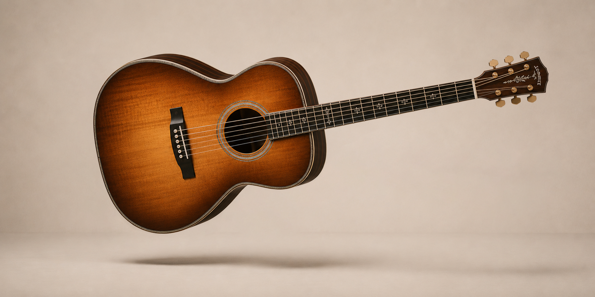

Descubrí el oficio de la luthería construyendo una guitarra acústica desde cero.
InscribirmeUn curso pensado para quienes desean iniciarse en la construcción artesanal de instrumentos, combinando práctica, precisión y conocimiento técnico.
Empieza a construir instrumentos desde cero de forma artesanal con bases técnicas.Descubrí cada etapa del proceso de construcción de la guitarra criolla.

Aprendé a interpretar planos y definir proporciones de la estructura de la guitarra

Conocé las propiedades de las maderas y materiales utilizados en luthería tradicional

Desarrollá las técnicas de corte, ensamblado, encolado y armado de tu guitarra

Realizá el lijado, acabado, calibración y ajustes finales para lograr una guitarra perfecta
Aprendé a utilizar herramientas tradicionales que forman parte del oficio del luthier


Nuestros curso está creado para todos los que encuentran valor en lo artesanal
Para quienes quieren comprender el instrumento desde su origen
Para quienes trabajan con las manos y buscan expandirse

Para aquellos que quieren llevar forma y función de la mano
Para todos los que verdaderamente aman la música
Al final del curso te llevás una guitarra criolla construida enteramente por vos
Al final del curso te llevás tu propia guitarra criolla




Precio del curso
$300.000
Materiales incluidos · Grupos reducidos
Inscribirme ahora¿Tenés dudas? Escribinos